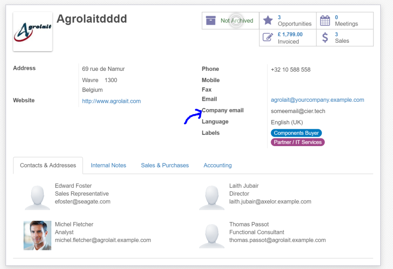

When default email field is not enough this module will be helpful.
This might happen when you want to have an additional email so employees can safely use
it without worrying that Odoo will send an Invoice or other correspondence to it.
Main features:
- Does not conflict with any existing data
- safe - it is not used by Odoo in any way
- field value is copied from company to its employees

If you need help with installation or some additional features feel free to contact
Email: Piotr Cierkosz
Website: www.cier.tech